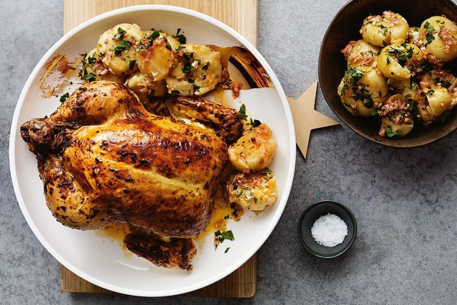

Spring Roast Chicken Recipe
I’m not the first to combine lemon, garlic and chicken – and I won’t be the last – but sometimes it’s good to be reminded that the classics are classics for a reason. Roasting a chicken is the ultimate simple dish: it’s easy, quick, fills the house with delicious smells and everyone loves the result. You can prep the chicken 4–5 hours in advance if you like, and then just place in the oven when ready to cook.
Ingredients
- 70g unsalted butter, softened to room temperature
- 3 tbsp thyme leaves
- 3 garlic cloves, crushed
- 1 small preserved lemon, pips discarded, flesh and skin roughly chopped (30
- 1 lemon: zest finely grated, plus 1½ tbsp juice, to drizzle
- 1 whole chicken (1.5kg)
- salt and black pepper
Method
- Preheat the oven to 190°C fan.
- Place the butter, thyme, garlic, preserved lemon, lemon zest, ¼ teaspoon of salt and a generous grind of pepper in a food processor. Blitz to combine.
- With the chicken’s legs pointing towards you, use your hands to loosen the skin away from the breasts and spread most of the butter mixture evenly under the skin and over the breasts. Spread the remaining butter over the legs.
- Place the chicken in a medium high-sided baking tray, drizzle with the lemon juice and sprinkle with ½ teaspoon of salt and plenty of pepper. Roast for roughly 70 minutes, basting every 20 minutes or so, until the skin is golden-brown and crisp and the juices run clear when the meat is pierced with a small knife.
- Remove from the oven and set aside to rest for 10 minutes before serving.
